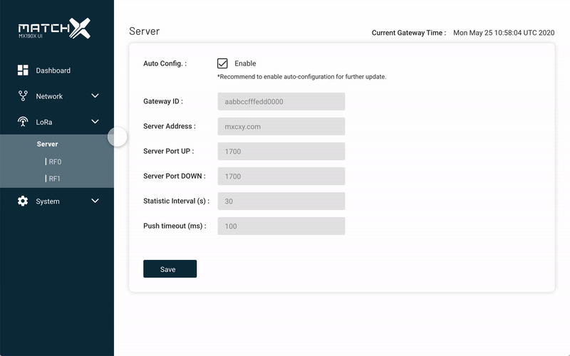
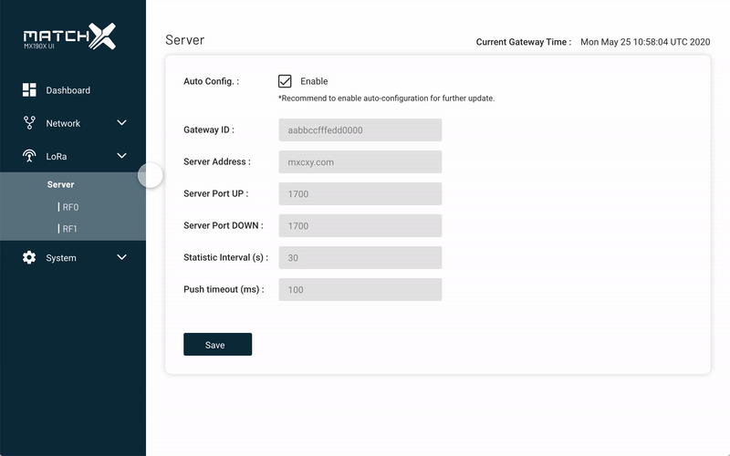

When the plans to develop this project emerged I remember seeing how excited our engineers were, and this is when my curiosity started.
I was especially interested because my target users were right in front of me.
I had so many questions since I had never built any software for engineers before.
1. I wanted to know why this project made them excited
2. Make me understand what it does, which took a while...
3. How this will help other users who own the gateway
4. Is the language that you use, understandable to other engineers
5. Do we also want other ordinary users can configure the gateway or only targeting engineers and so on


 
